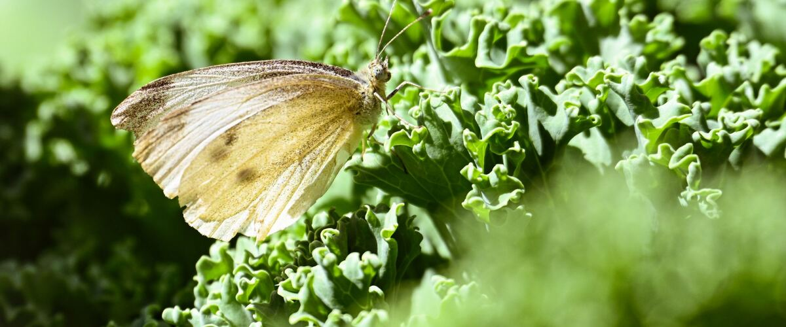
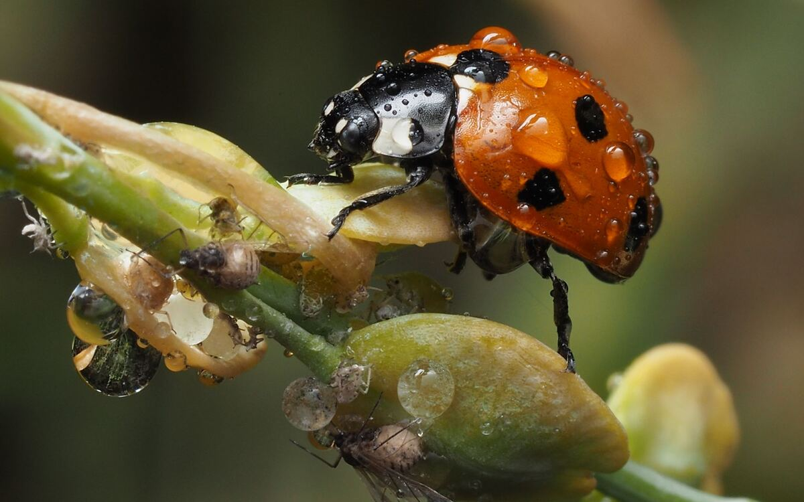
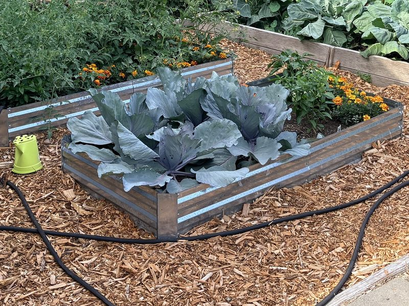

Pests and diseases · Oregon · Washington · Idaho
Cabbage Worms and Aphids on Kale, Broccoli and Cabbage
The two pests that chew and crowd Northwest cabbage-family crops, how to spot them early, and how to keep them off without harsh sprays.
Kale, broccoli, cabbage and their relatives are some of the easiest crops in a Northwest garden, and two pests know it. Green caterpillars chew holes through the leaves in summer, and gray aphids pack the undersides of leaves and the inside of Brussels sprouts by fall. Both are easy to manage if you catch them early.
Cabbage worms
If small white butterflies are flitting around your garden in summer, they're almost certainly cabbage whites, and they're laying eggs on your cabbage-family plants. The eggs hatch into velvety green caterpillars that match the leaves so well you'll usually see the damage first: ragged holes, chewed edges and small dark green droppings in the leaf joints and broccoli heads. Cabbage loopers, pale green caterpillars that arch their backs as they move, cause the same kind of damage.
What works:
- Row cover from day one. A lightweight fabric row cover laid over the plants at planting and tucked in at the edges keeps the butterflies from ever laying eggs. Cabbage-family crops don't need bees to pollinate them, so the cover can stay on all season. This one step prevents most of the problem.
- Look and pick. Check the undersides of leaves and the centers of plants once or twice a week. Squash the caterpillars and the tiny pale yellow, bullet-shaped eggs.
- Bt if needed. Sprays of Bt (Bacillus thuringiensis, kurstaki strain) are a bacterium that only affects caterpillars that eat treated leaves. It's widely used by organic growers. Spray the leaf undersides, and reapply after rain.
Aphids
The cabbage aphid is a small, gray-green insect with a powdery, waxy coat. It lives in dense colonies on the undersides of leaves and in the growing tips, and leaves curl and pucker around it. It's at its worst in late summer and fall, just as winter kale and Brussels sprouts are sizing up, and a bad colony can work its way into every sprout.
What works:
- Catch it early. Turn over leaves every week from midsummer. A single colony is easy to deal with; a plant-wide outbreak isn't. Pull off and bag heavily infested leaves.
- A hard spray of water knocks aphids off and many don't make it back. Repeat every few days.
- Let the predators work. Ladybugs and their larvae, lacewings, hoverfly larvae and tiny parasitic wasps all eat aphids. If you see bloated, tan "mummy" aphids, the wasps are already on the job. Broad-spectrum insecticides kill these helpers along with the pests and often make aphids worse a few weeks later.
- Insecticidal soap works on contact, so it has to hit the aphids directly, including under leaves. Several applications may be needed. Avoid spraying in hot sun.
- Go easy on nitrogen. Lush, heavily fertilized growth is exactly what aphids like best.

Plan around them
Spring plantings often finish before either pest builds up, which is one more reason to plant on time; see the broccoli and kale guides for your dates. For summer-planted fall and winter crops, put row cover on at planting. At the end of the season, pull out spent cabbage-family plants rather than leaving them all winter, since aphids can overwinter on old stems, especially in mild west-side gardens.
And don't panic over a few holes. Kale with some chewed leaves still tastes the same, and a quick soak in salty water before cooking draws out any caterpillars hiding in broccoli heads.

Red cabbage in a raised bed, with marigolds planted along the edge. Photo: Janelle Burklund, contributor